For the Love of Coding:
Form Follows Function Follows Futility...
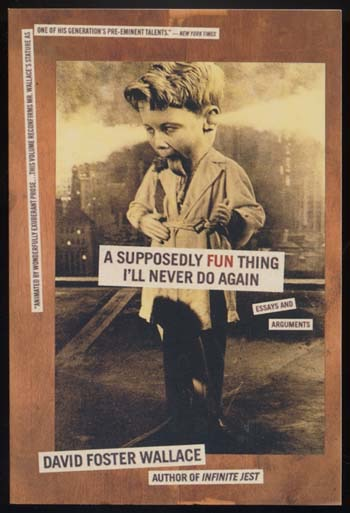
My sentiments exactly--after I fell for HTML.
I thought learning HTML would make me a...
Didn't happen.
"Man's got to know his limitations."
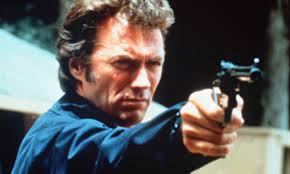
The second best line from a Dirty Harry movie.
Stop. OK. There's no responsive design in this website. Sorry.
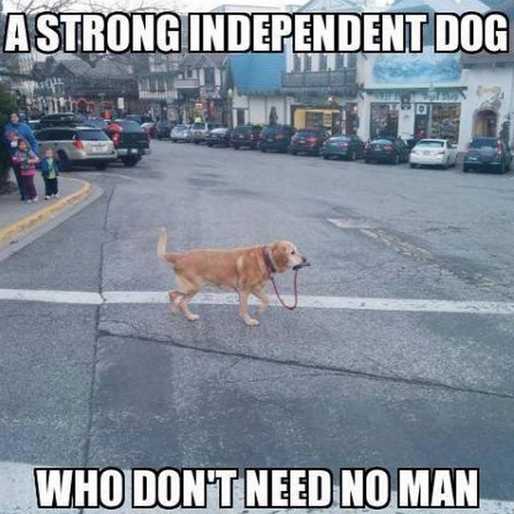
I'm a dog. And in the dog-eat-dog world, I don't hear the man very well.
Hey, is that the leader of the pack, Sandy, on vacation next week?
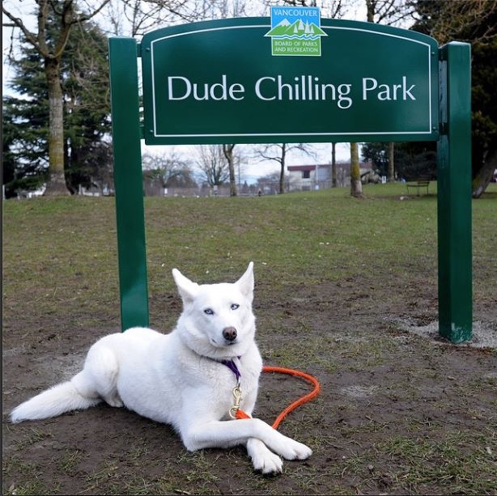
My frickin' animal spirit.
P.J. knows how it's done.
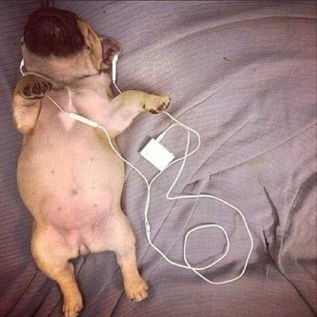
P.J. defying gravity...and chilling.
No. I promise I won't ruin your day. Keep scrolling.
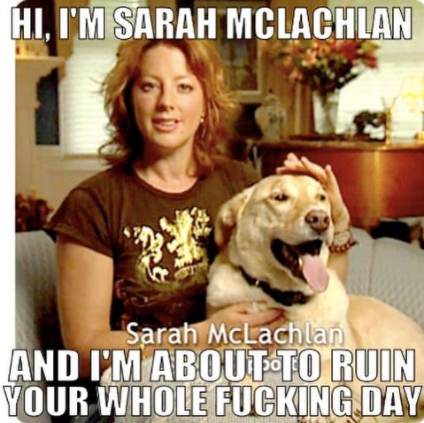
I'll leave that to other people.
No. I'm going to brighten up your day.
 Oh yeah. Light a spark. Reveal the power of memes.
Oh yeah. Light a spark. Reveal the power of memes.
This guy wants to be President of the Internet.
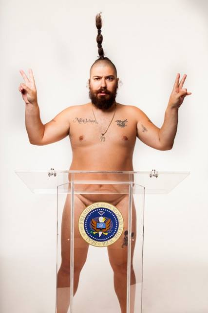
He's Josh Ostrovsky, already King of Instagram.
Goes by the name, the Fat Jew. Master of the meme.
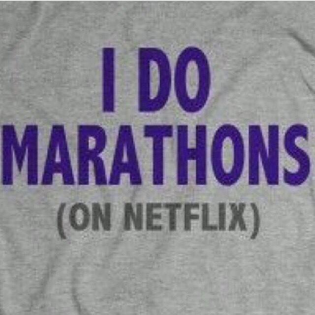
Truly dedicated to the cause.
His thinking is revolutionary.
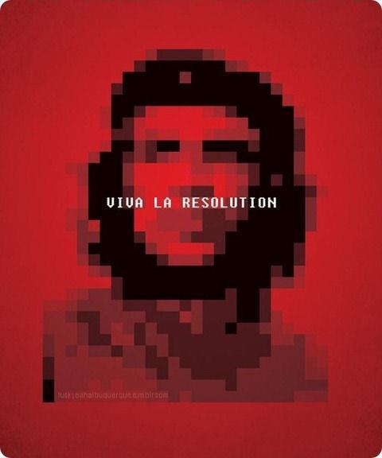
He gets the net.
Has an intimate feel for technology.
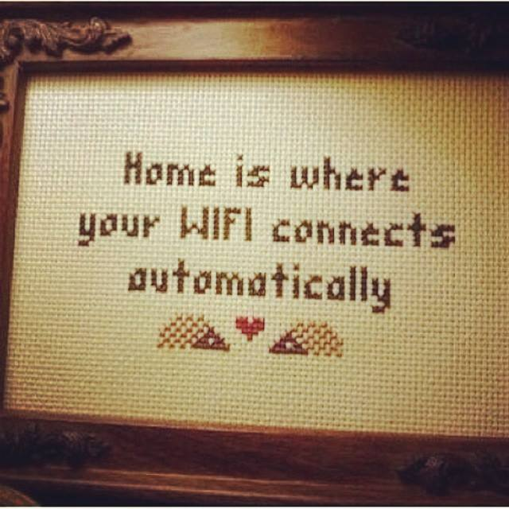
Meaning not my parents' house where the password is RHXFGHJIJ000005...
Also knows his pop culture.
 A man with a heart.
A man with a heart.
Got his big break doing jokes about dogs.
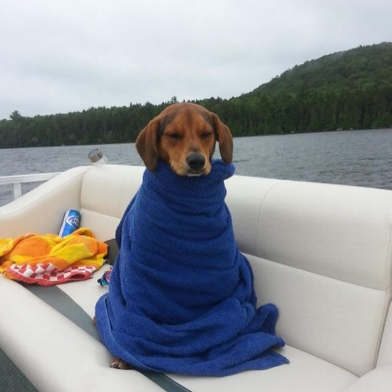
Dogs-wrapped-in-blankets-looking-like-women-who-are-cold series.
Because women are always cold and love blankets. Always.
More dogs.
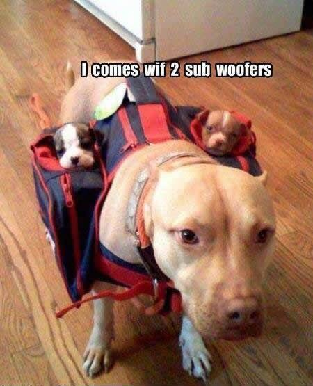
WOOF. woof. woof.
Some rank the German Shepherd as the top dog.
Especially that East German Breed...so disciplined!
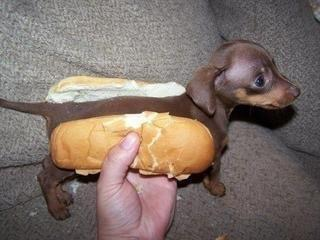
Wrong. It's the Weiner Dog.
His canvas isn't limited solely to dogs.
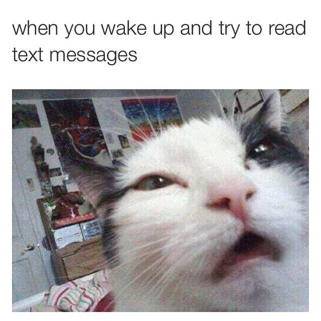
What was in the catnip?
Dogs. Cats. He knows how to win hearts.
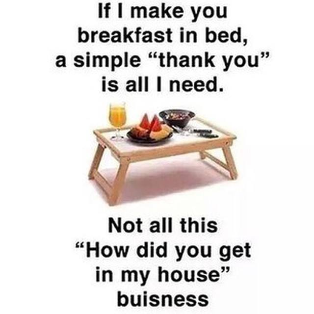
A true heart of gold.
And guys like him because he's a manly man.
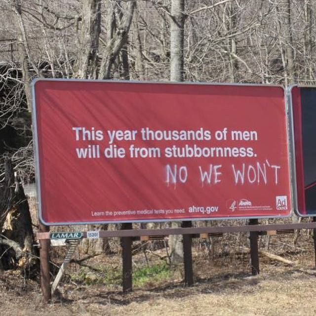
He gets his point across. With such style.
The World's Most Interesting Man is being challenged.
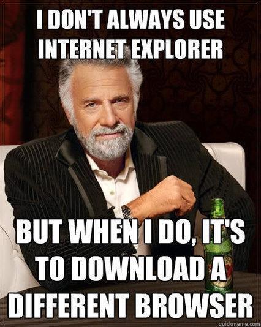
Yep. The Dos Equis Dude may have reached his shelf life.
You see, the Fat Guy is a bona-fide, modern day philosopher king.
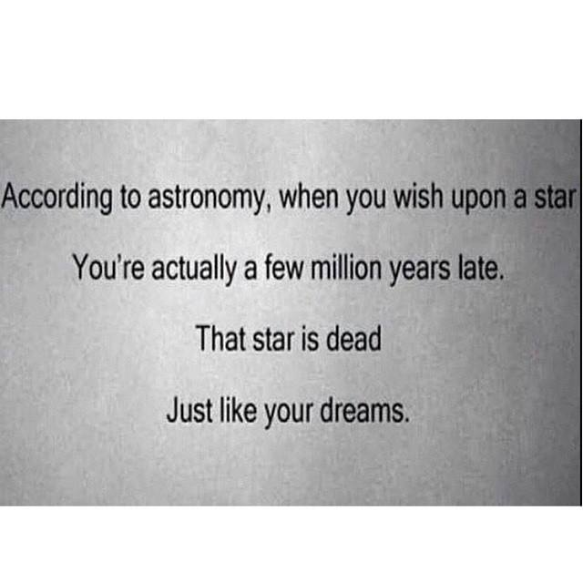
The ZEITGEIST. He brilliantly distills the essence of our existence.
Though he hasn't gotten Oprah's endorsement...
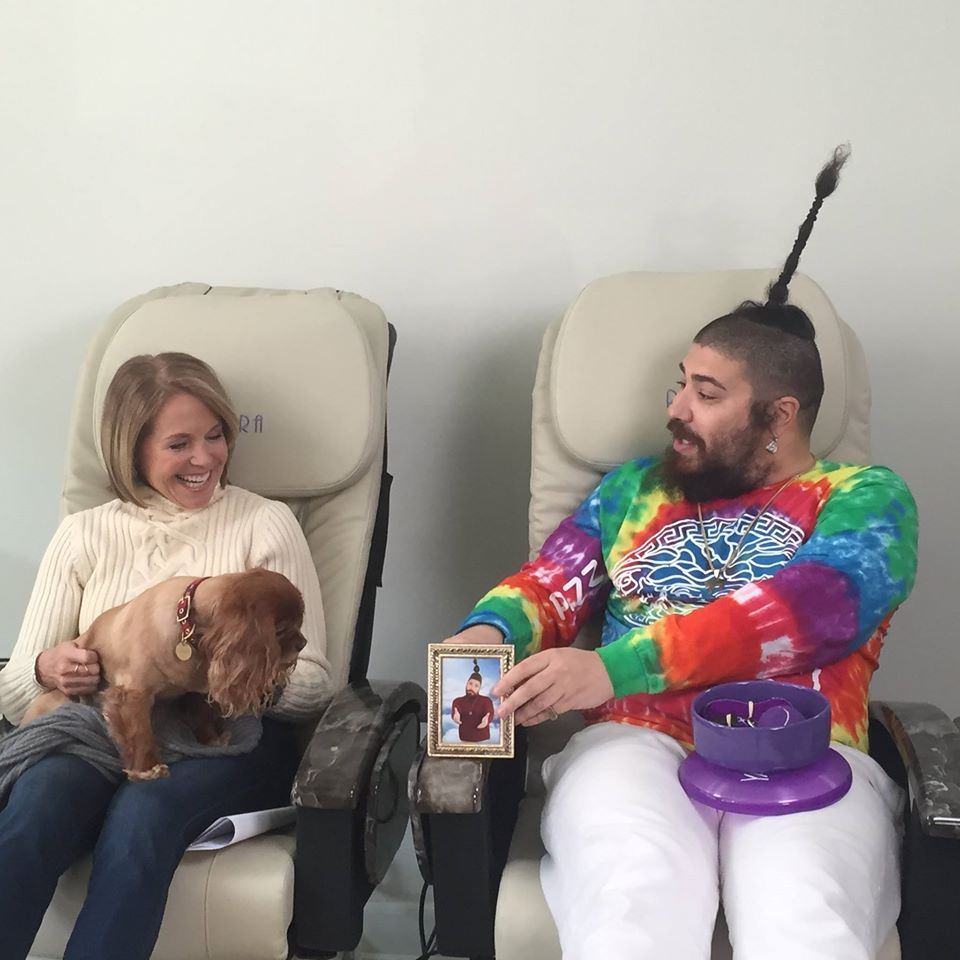
He's gotten two thumbs up from Katie Couric and Martha Stewart.
Now the Dude still abides...
 And will always. But there is a new icon on the radar.
And will always. But there is a new icon on the radar.
He's on the rise. Like his hair...
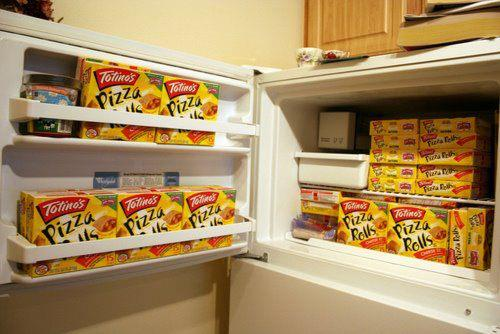
Know what that spiked wonder atop his head means? He's the one...so what if it takes a chopstick to pull it off.
He wants to be President of the Internet. No one ever asked before.
Here. His frig. Proof of the order so badly needed in a world where anyone can post drivel on the net.
Vote for the Fat Guy. Vote twice if you can. Let there be order and lots of pizza, too. Thanks.